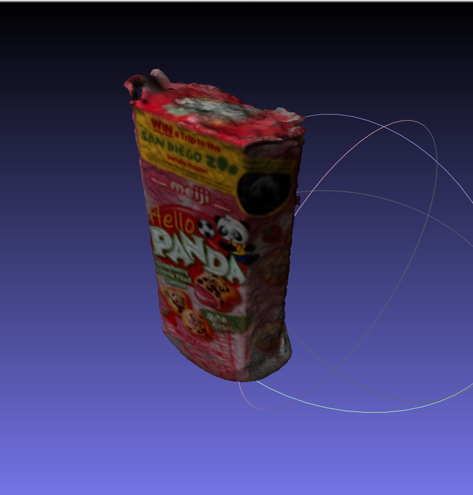
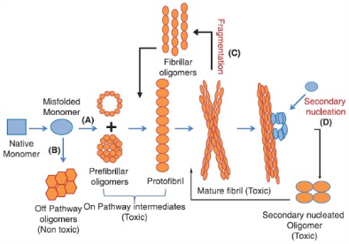
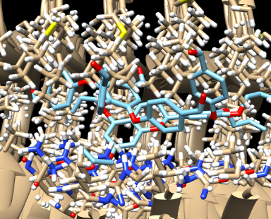

COSMOS: Robotics and Biophysics Cluster
Summer 2018
During the summer of 2018, I had the opportunity to attend the COSMOS summer program, where I worked with professors from the UC Davis Biophysics and Robotics department to learn and do some cool projects. For my final project, I worked with a partner to engineer a robot that would create a three dimensional reconstruction of an object by autonomously navigating around it. The robot had a multitude of ultrasonic sensors to navigate by itself and had a high definition camera mounted a lift, which would take multiple pictures of the object from many different angles and directions. A reverse double four bar lift would raise the camera slightly go to get even more angles of the object. Finally, we created a Python program to parse through the images and detect similar features among the pictures. The program created dense point cloud three dimensional reconstruction of the object with colorized pixels. Below are some videos and pictures of the robot.


ASDRP Research
Summer 2020
During the summer of 2020, I conducted computational biology research in the ASDRP (Aspiring Scholars Directed Research Program) to investigate the structural binding of polyphenolic compounds on neurotoxic beta amyloid peptides. These peptides in the brain can aggregate to cause many neurodegenerative disease such as Alzheimer's disease and creating drugs to hamper the accumulation of these plaques could help reduce brain degeneration. More specifically, I designed and computationally tested various derivatives of epigallocatechin gallate (found in green tea) to try to functionalize it to be an effacious drug for inhibiting the aggregation of amyloid beta. Through the Avagadro, Orca DFT, UCSF Chimera, and Autodock Vina softwares, I conducted molecular simulations to test the binding affinities of these novel proposed drug candidates as well as its thermodynamic stability. The pictures below show the biological schematic of amyloid beta transformation and a drug docking simulation result.

